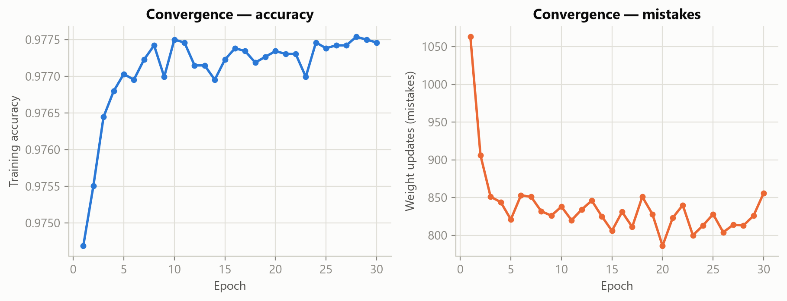
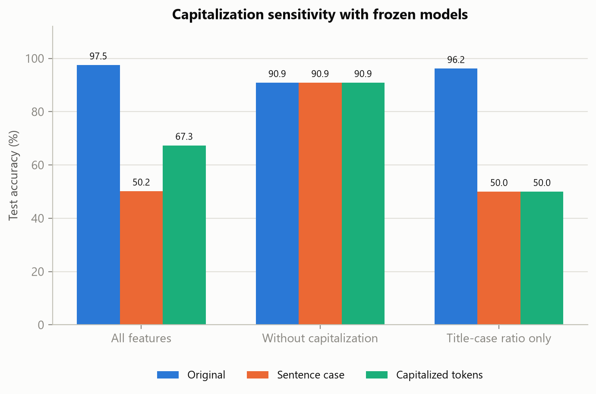
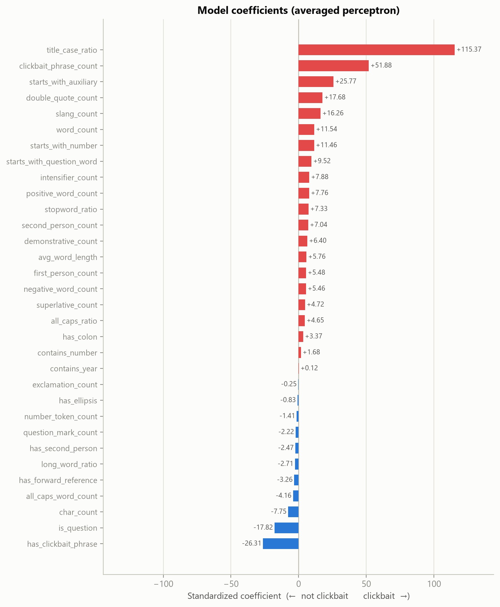

Research paper synchronized with results/metrics.json. Export with A4 paper, CSS page margins, background graphics enabled, and browser headers and footers disabled.
Clickbait detection with named linguistic featuresReproducible in-corpus benchmark
Perceptron-Based Text Classification for Detecting Clickbait Headlines
Arton Gërguri and Jon KlinakuFaculty of Electrical and Computer Engineering, University of Prishtina, Kosovo
Abstract - We study clickbait detection with an averaged perceptron implemented from scratch and 32 named lexical and stylistic features. On 6,400 test headlines from the 32,000-headline Stop Clickbait corpus, it achieves 97.50% accuracy and 0.9969 ROC-AUC. Logistic regression on the same features achieves 97.59% accuracy; a TF-IDF logistic-regression reference achieves 96.89%. Paired five-fold validation within the training partition gives similar performance for the two engineered-feature classifiers. Controlled perturbations expose substantial capitalization dependence: the full perceptron falls to 50.17% accuracy on sentence-cased test headlines, while a model without casing features remains at 90.89%. Standardized coefficients and additive score explanations make the fitted rule inspectable, but correlated inputs and fold-dependent signs constrain broader linguistic conclusions. The benchmark demonstrates compact linear classification while identifying typography sensitivity as its central generalization concern.
Index Terms - clickbait detection, averaged perceptron, feature engineering, linear classification, interpretability, robustness.
I. Introduction
Clickbait headlines invite attention through curiosity, exaggeration, reader address, or withheld information. Detecting these cues is a useful text-classification exercise, but a high benchmark score alone does not establish that a model understands them. Publisher typography can provide an easier shortcut.
This project asks how well a small, named feature representation classifies this corpus, and what inspection reveals about dependence on that representation. The goal is a reproducible implementation whose inputs, updates, and prediction scores can be examined directly.
Our contributions are an averaged perceptron in NumPy; 32 linguistic and stylistic features; a classifier control using identical inputs; paired validation against a word/ngram baseline; and capitalization and coefficient-stability diagnostics. We compare linear models, without a neural benchmark or a state-of-the-art claim.
II. Background and Dataset
Chakraborty et al. introduced Stop Clickbait and demonstrated feature-based detection [1]. Our classifier follows the perceptron tradition [2], with averaging motivated by voted and averaged perceptrons [3, 4]. The contribution here is the implementation and controlled evaluation, rather than a new learning algorithm.
The local CSV contains 32,000 English headlines: 15,999 clickbait and 16,001 non-clickbait examples. Headlines average 9.07 whitespace-delimited words (range 1-26). A stratified split with seed 42 yields 25,600 training and 6,400 test examples. The test partition has 3,200 examples of each class.
The CSV provides text and labels, without publisher identifiers or timestamps. We therefore cannot measure cross-publisher or temporal generalization. Earlier development has examined this corpus; the test scores remain exploratory in-corpus measurements.
III. Feature Representation
Each headline becomes a 32-dimensional vector (Table I). Unicode NFKC normalization, whitespace collapsing, and apostrophe canonicalization precede matching. Original casing and punctuation are retained. Lexical cues use case-insensitive matching; phrase boundaries prevent ever from matching inside every.
Table I. Twelve feature families, 32 features
Family
Examples
Numeric / listicle
Numeric onset, number counts, year
Reader address
First- and second-person counts
Forward reference
Demonstratives, reference presence
Clickbait phrases
Distinct trigger count and presence
Interrogative
Question ending, word/auxiliary onset
Hyperbole
Superlative and intensifier counts
Punctuation
Exclamations, quotes, ellipsis, colon
Length
Word/character counts, word lengths
Capitalization
Title-case ratio, all-caps count/ratio
Informal register
Slang count
Affect
Positive and negative word counts
Function words
Stopword ratio
The combined emotional-word count is omitted because it equals the positive plus negative counts. This removes exact redundancy, while related cues remain correlated.
Methodology and model comparisonSame splits, controlled inputs
IV. Learning and Evaluation
A. Averaged perceptron
Standardize inputs using training-only statistics. With labels in {−1,+1}, score s(x) = w·x + b. If ys(x) ≤ 0, update w ← w + ηyx and b ← b + ηy. Cached accumulators average the intermediate parameters for prediction.
Defaults are 30 epochs, learning rate 1.0, shuffled order, and seed 42. Figure 1 diagnoses training, without measuring generalization.
B. Two linear reference models
Engineered logistic regression uses identical standardized inputs to control for the classifier. TF-IDF logistic regression uses lowercased word unigrams/bigrams, sublinear term frequency, and at most 20,000 features.
Both use L2 regularization, C = 1.0, liblinear, and at most 1,000 iterations [5]. Word/ngram coefficients are inspectable; named cues offer a more compact summary.
C. Paired validation
All models share the outer split. Within the 25,600 training examples, stratified five-fold validation uses identical folds for all three. Every scaler, vocabulary, and classifier is fitted only to its fold's training subset. Test examples are excluded from every validation fold.
Metrics are clickbait precision, recall, F1, accuracy, and ROC-AUC from decision scores. Validation summaries use fold means and population standard deviations, rather than confidence intervals or superiority tests. Settings remain fixed.
Table II. Held-out performance on 6,400 original headlines
Model
Features
Accuracy
Precision
Recall
F1
ROC-AUC
Averaged perceptron
32
0.9750
0.9768
0.9731
0.9750
0.9969
Engineered logistic regression
32
0.9759
0.9745
0.9775
0.9760
0.9977
TF-IDF logistic regression
20,000
0.9689
0.9741
0.9634
0.9687
0.9957
Table III. Paired five-fold validation within the training partition
Model
Accuracy (%)
F1
ROC-AUC
Averaged perceptron
97.688 ± 0.064
0.9769 ± 0.0007
0.99750 ± 0.00010
Engineered logistic regression
97.664 ± 0.098
0.9767 ± 0.0010
0.99782 ± 0.00028
TF-IDF logistic regression
96.602 ± 0.297
0.9657 ± 0.0030
0.99471 ± 0.00041

Fig. 1. Training diagnostics for the 32-feature averaged perceptron. Held-out and paired validation performance are reported separately in Tables II and III.
V. Comparison Results
The engineered-feature classifiers score similarly. Logistic regression makes six fewer test errors (154 versus 160); the perceptron has slightly higher mean validation accuracy. This reversal discourages an algorithm-superiority claim.
Both exceed this TF-IDF configuration. We next test their representation's dependence on typography, a potential obstacle to transfer.
Controlled robustness experimentFrozen models and unchanged labels
VI. Capitalization Dependence
A. Feature ablation and text perturbation
Train three perceptron variants on original text: all 32 features; 29 excluding title-case ratio and all-caps count/ratio; and title-case ratio alone. Each uses its own training-fitted scaler with identical epochs and seed.
Freeze each model and scaler. Evaluate the same 6,400 examples as original text; sentence case (str.capitalize(), uppercasing the first character and lowercasing the rest); and capitalized token initials, preserving remaining characters. Labels stay fixed.
B. Scope of the intervention
These interventions reveal typography sensitivity. Sentence casing also affects acronyms and proper names. Capitalized token initials give title-case ratio one throughout this corpus. Neither change replicates a specific outlet's policy.
The 29-feature model is invariant by construction. This checks the partition without establishing robustness to paraphrases, vocabulary change, or source shift.
Table IV. Frozen-model test accuracy under capitalization changes
Training feature set
Features
Original (%)
Sentence case (%)
Capitalized tokens (%)
All features
32
97.50
50.17
67.34
Without capitalization
29
90.89
90.89
90.89
Title-case ratio only
1
96.17
50.00
50.00

Fig. 2. Capitalization sensitivity of separately trained feature variants. Bars within a variant use the same frozen classifier, scaler, test examples, and labels.
C. Interpretation
Sentence casing changes 3,177 full-model predictions. Just 11 of 3,200 clickbait examples remain positive: 0.34% recall and 50.17% accuracy. ROC-AUC remains 0.7865, so threshold failure coexists with residual ranking signal.
Title-case ratio alone achieves 96.17%; removing all casing features costs 6.61 accuracy points on original text. Capitalization is a dominant benchmark shortcut.
This is consistent with publisher-style confounding. Absent source identifiers, attribution to outlets and measurement of cross-source transfer require new data.
Model inspectionConditional coefficients in standardized coordinates
VII. Coefficients and Correlated Inputs
A standardized coefficient describes the fitted score change from a one-standard-deviation increase in an input while holding the others fixed. Figure 3 shows the model trained on the full training partition. Title-case ratio has the largest positive coefficient; phrase count and auxiliary onset are also positive. These describe the fitted rule, rather than causal effects or unique measures of linguistic importance [6].

Fig. 3. Coefficients fitted to the 25,600 training examples. Positive values increase the clickbait score; negative values decrease it. Standardization supplies common units, without removing correlations or making unsupported input combinations realistic.
Count and presence indicators remain correlated. Phrase count is positive while phrase presence is negative; jointly they specify a contribution for each count. Reading either sign alone can misrepresent that rule.
Word count, character count, and average word length are also related. Inspection should combine coefficients, contribution sums, ablation, and stability. The casing experiment gives a stronger diagnostic of model reliance than weight ranking alone.
Interpretation, scope, and conclusionsEvidence and limits
VIII. Stability and Score Explanations
A. Coefficients across folds
Table V summarizes coefficients from five training-only validation fits. Sign agreement is the fraction matching the full-training coefficient's sign; each fold uses its own training scaler. Means and population standard deviations describe these five fits, not uncertainty over all possible datasets.
Table V. Selected standardized coefficient summaries
Feature
Mean ± SD
Sign agreement
Title-case ratio
114.05 ± 3.65
100%
Phrase count
42.73 ± 15.09
100%
Phrase presence
−20.08 ± 9.70
100%
Exclamation count
0.80 ± 0.43
0%
Year presence
0.08 ± 0.32
80%
Ellipsis presence
−1.39 ± 1.30
80%
The full-training exclamation coefficient is −0.25, while every fold coefficient is positive. This does not support a claim that exclamations intrinsically reduce clickbait. Stable signs can also coexist with variable magnitudes, as the phrase features show.
B. Additive explanations
For raw input xj, contribution cj = wj(xj − μj)/σj, using training statistics and scale one for constant inputs. The score equals bias plus all contributions. A shortened display retains the omitted terms' sum.
For 17 Things Only People Who Love Coffee Will Understand, the model predicts clickbait. Table VI reconstructs the score, rounded for display. This illustrates arithmetic rather than independently evaluating explanation quality.
Table VI. An additive score explanation
Term
Contribution
Title-case ratio
+88.80
Phrase count
+80.08
Phrase presence
−63.08
Positive-word count
+31.14
Numeric onset
+23.08
Stopword ratio
−6.90
All remaining features
−19.11
Bias
−44.03
Decision score
+89.98
Contributions are relative to training means, so a raw zero can contribute a nonzero amount. Scores are margins, not calibrated probabilities; their scale should not be compared directly across models.
IX. Limitations and Reproducibility
The benchmark is English, headline-only, and drawn from one historical corpus. Lexicons cover limited vocabulary. Correlated cues, source style, and prior corpus examination constrain conclusions. There is no external, source-held-out, or temporal evaluation, nor evidence of deployment performance.
Casing interventions preserve labels and expose the specified sensitivity, without covering every distribution shift. The 29-feature variant trades original-corpus accuracy for casing invariance. Independently collected headlines are needed before choosing a deployment model.
Run python main.py from the repository root. Metrics include configuration, package versions, data and source hashes, fold scores, perturbation conditions, and explanation terms. CSVs expose coefficients and stability; figures come from the same run. These results supersede earlier 33-feature reports.
X. Conclusion
The 32-feature averaged perceptron performs strongly on this corpus; logistic regression on identical inputs performs similarly. The clearest finding is capitalization sensitivity despite high original-text accuracy. Compact linear models make this dependence inspectable, but transparency alone does not ensure generalization. Future work should prioritize independent publishers and time periods, with robustness and feature-group analysis alongside predictive metrics.
References
A. Chakraborty, B. Paranjape, S. Kakarla, and N. Ganguly, "Stop Clickbait: Detecting and preventing clickbaits in online news media," Proc. ASONAM, 2016, pp. 9-16. doi:10.1109/ASONAM.2016.7752207.
F. Rosenblatt, "The perceptron: A probabilistic model for information storage and organization in the brain," Psychological Review, vol. 65, no. 6, pp. 386-408, 1958. doi:10.1037/h0042519.
Y. Freund and R. E. Schapire, "Large margin classification using the perceptron algorithm," Machine Learning, vol. 37, pp. 277-296, 1999. doi:10.1023/A:1007662407062.
M. Collins, "Discriminative training methods for hidden Markov models: Theory and experiments with perceptron algorithms," Proc. EMNLP, 2002, pp. 1-8. ACL Anthology W02-1001.
Scikit-learn developers, "LogisticRegression," scikit-learn documentation. Official API reference. Accessed November 4, 2026.
Scikit-learn developers, "Common pitfalls in the interpretation of coefficients of linear models," scikit-learn documentation. Official interpretation example. Accessed November 4, 2026.